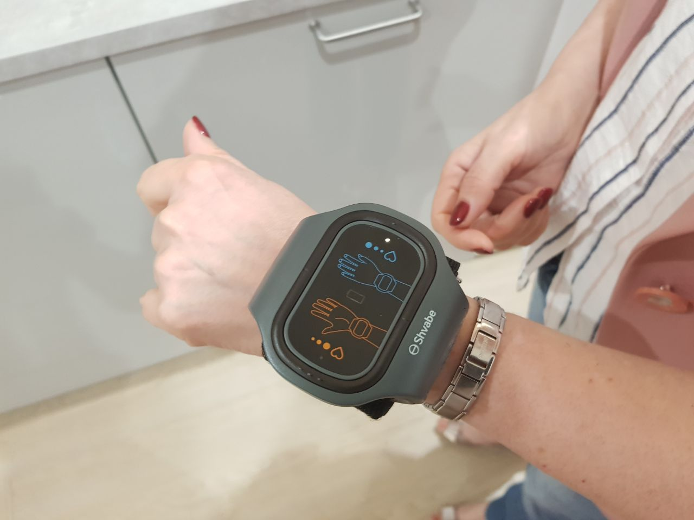

Es wurde eine neue Methode zur Bekämpfung der Hypotonie entdeckt, die Millionen von Menschenleben retten wird
Das Gerät zur Behandlung der Hypotonie steht allen zur Verfügung!
Jens Brandt ist ein berühmter Wissenschaftler und Erfinder, der sein ganzes Leben lang gegen die Hypotonie gekämpft und verschiedene Medikamente und Geräte entwickelt hat. Nach 15 Jahren harter Arbeit entwickelte er einen neuen Weg, um den Blutdruck innerhalb weniger Tage zu normalisieren. Nachdem er der ganzen Welt das neue Gerät vorgeführt hatte, ist er zum echten Star geworden!

Präsentation eines neuen Armbandes
Seine Entdeckung wurde in allen Zeitungen des Landes veröffentlicht, heute wird das Gerät von den meisten Kliniken verwendet. Alle bekannten wissenschaftlichen Organisationen der Welt arbeiten an der Schaffung des Geräts von Jens Brandt. Sie haben ein Armband entwickelt, das die Hypotonie behandelt, den Herzschlag normalisiert, Schlaganfälle verhindert und das Leben einer Person um mindestens 10 Jahre verlängert. Nach der Entscheidung des Nationalen Komitees für medizinische Reformen hat absolut jeder die Möglichkeit das Gerät zu einem sehr niedrigen Preis erwerben!
Exklusives Interview mit dem Entwickler des Armbandes, Jens Brandt und Leiter des nationalen Komitees für medizinische Reformen Gerhard Lange
 Entwickler des Armbandes gegen die Hypotonie, berühmter Wissenschaftler Jens Brandt.
Entwickler des Armbandes gegen die Hypotonie, berühmter Wissenschaftler Jens Brandt.
Korrespondent: “Herr Brandt, Sie haben Ihr ganzes Leben der Entwicklung eines Geräts gewidmet, die Hypotonie heilen kann. Warum haben Sie nicht, wie die meisten anderen Wissenschaftler, aufgegeben?”
Jens Brandt: Ich war mir sicher, dass alle meine Bemühungen von Erfolg gekrönt werden. Als vor einigen Jahren die staatlichen Mittel für die Entwicklung neuer Geräte und Medikamente gekürzt wurden, war es natürlich sehr schwierig zu arbeiten. Zu dieser Zeit sind viele Wissenschaftler verschwunden, die sich nur damit beschäftigten, staatliche Zuschüsse zu erlangen. Ich musste arbeiten und mich ausschließlich auf mich selbst verlassen. Als das Geld zu Ende war, musste ich mein Haus verkaufen, um weiter an dem Armband arbeiten zu können. Das Wichtigste ist, dass ich es doch noch geschafft habe! Als ich die ersten positiven Ergebnisse sah, konnte ich nicht glauben, dass es mir doch noch gelungen ist, einen innovativen Weg zur Behandlung der Hypotonie zu finden. Ich habe alles nochmals überprüft und habe mir dann gesagt, dass ich es endlich geschafft habe.
Korrespondent: “Wie ist es dazu gekommen, dass der Staat für die Herstellung des Armbandes kein Geld hatte?”
Jens Brandt: Ich habe mehrmals versucht die Regierungsbehörden davon zu überzeugen. Ich habe versucht sie über offizielle Kommunikationskanäle zu erreichen. Sie können sich das Ausmaß der Bürokratie aber nicht vorstellen. Ich habe ihm jedes Mal gesagt, dass ich ein Gerät habe, dass vielen Menschen das Leben retten kann, doch das hat sie überhaupt nicht interessiert. Sie wollten mir einfach nicht zuhören.
Gleichzeitig habe ich mehrere Kaufangebote erhalten, sobald man darüber anfing in den Medien zu sprechen.
Korrespondent: “Wie viel Geld hat man Ihnen für das gerät angeboten?”
Jens Brandt: Die Geldbeträge waren enorm. Zwischen 300-400 Tausend bis zig Millionen Dollar. Das größte Angebot machte ein US-amerikanisches Unternehmen. Man hat mir angeboten die Rechte an dem Gerät für 350 Millionen Dollar zu kaufen und dazu auch noch bei ihnen den Produktions- und Entwicklungsprozess des Armbands zu steuern.
Korrespondent: “Warum haben Sie dieses Angebot abgelehnt? Sie könnten doch ziemlich reich werden, ohne viel Geld für die Entwicklungen auszugeben”.
Jens Brandt: Vielleicht habe ich den Fehler gemacht, dass ich so viel Geld abgelehnt habe, als ich aber dieses Armband entwickelt habe, wollte ich, dass es der ganzen Welt helfen wird. Um ehrlich zu sein, litt ich selbst an niedrigem Blutdruck und ich weiß, was das für eine schreckliche Krankheit ist. Deshalb bin ich dagegen, dass man mit Menschenleben Geld verdient.
Ich erinnere mich noch an ein US-amerikanisches unternehmen, das die Rechte an seltenen und sehr nützlichen Medikamenten aufgekauft hat und die Preis um hunderte Male erhöht hat. Infolgedessen wurden Medikamente gegen Krebs und Hepatitis für fast Zehntausende von Dollar verkauft! Dabei kann man nichts dagegen unternehmen. Es wurden zwar Untersuchungen durchgeführt, die jedoch überhaupt keine Ergebnisse lieferten. Denn der Eigentümer hat das Recht, die Kosten für das Medikament selbst festzulegen.
Und jetzt das wichtigste:Wer wird sich mein Hypertonie-Armband kaufen, wenn es mehrere Zehntausend kosten wird? Niemand. Nur die wohlhabende Schicht der Bevölkerung und korrupte Beamte. Der Rest wird weiterhin an der Krankheit leiden und das Schlimmste ist, dass sie weiterhin sterben werden.
Korrespondent: “Wie haben Sie es doch geschafft, die oberste Schicht der Beamten zu erreichen?”
Jens Brandt: Als viele Artikel über das Armband geschrieben wurden, wurde mein Name immer wieder erwähnt und erhielt sofort einen Anruf vom Nationalen Komitee für medizinische Reformen.
Dort erkannte man sofort, dass es um viele Menschenleben geht. Dann begann eine große abteilungsübergreifende Gruppe von Spezialisten aus verschiedenen Organisationen an der Herstellung meines Armbands zu arbeiten. Die Rechte an dem Armband und den Einfluss auf den Prozess hatte immer noch ich. Wenn man also plötzlich beschließen sollte den Preis für das Armband zu erhöhen, kann ich immer noch dieser Entscheidung widerstehen.
Seitens des Staates wurde die Entwicklung vom Leiter des Nationalen Komitees für medizinische Reform Gerhard Lange koordiniert

Es war das Nationale Komitee für medizinische Reformen, das darauf bestand, dass das Gerät allen Bürgern mit der Hypotonie zur Verfügung steht. Das ist das erste Mal, dass ein Gerät im Rahmen einer medizinischen Reform auf diese Weise vertrieben wird.
Korrespondent: “Wie genau funktioniert Ihr Gerät? Warum hat das Nationale Komitee für medizinische Reformen mit Herrn Brandt zusammengearbeitet?”
Gerhard Lange: Lassen Sie uns sofort zur zweiten Frage übergehen: Wir waren die ersten, die Kontakt mit Herrn Brandt aufgenommen haben. Darüber hinaus ist nach den jüngsten Entscheidungen das Komitee selbst für die Entwicklung neuer Medikamente und Geräte verantwortlich, sowie deren Verteilung für die gesamte Bevölkerung.
Unser Gesundheitssystem ist so korrupt, dass wir eine separate autonome Struktur schaffen mussten. Dadurch werden Korruption und Unregelmäßigkeiten bei der Entwicklung neuer Geräte und Medikamente vermieden.
Was die Funktionsfähigkeit des Armbandes anbetrifft, so ist es eine völlig neue Methode zur Stabilisierung des Blutdrucks. Lassen Sie uns zunächst herausfinden, wie alte Medikamente und Geräte gegen den niedrigen Blutdruck funktionieren. Sie verengen gewaltsam die Blutgefäße und der Blutdruck beginnt zu steigen. Damit beschädigen sie sowohl die Blutgefäße, als auch das Herz. Der Tod nähert sich mit jeder Einnahme dieser Medikamente. Sie beeinflussen in keiner Weise die Hauptursache der Hypotonie – die Kohlendioxidsättigung von Arteriolen, kleinen Arterien.
Das von Jens Brandt entwickelte Armband übt mit Hilfe von Elektrostimulation eine Wirkung aus. Das Gerät verfügt über zwei Elektroden, die das Handgelenk mit einer Niederfrequenzstrom beeinflussen. Diese Wirkung verändert den Tonus der glatten Muskulatur kleiner Arterien. Wenn der Gefäßtonus abnimmt, beginnt der Blutdruck zu steigen. Darüber hinaus ermöglicht das Armband, die Hypotonie in wenigen Tagen vollständig zu heilen, wenn sich die Krankheit noch in der Anfangsphase befindet.
Korrespondent: "Ist die Hypotonie wirklich so gefährlich? Das ist doch schließlich nur ein niedriger Blutdruck".
Gerhard Lange: Nur ein niedriger Blutdruck? Dann eine Gegenfrage:Haben Sie jemals die Sterblichkeitsstatistik gesehen? Wissen Sie, wie viele Menschen an Herz-Kreislauf-Erkrankungen sterben? Über 69%! Das sind mehr als zwei Drittel! Und jeder von ihnen hat einen niedrigen Blutdruck. Haben Sie mindestens eine Person gesehen, die an einem Herzinfarkt oder Schlaganfall sterben würde, ohne an der Hypotonie zu leiden? Ganz bestimmt nicht. Jeder, der an einem Schlaganfall, einer Herzinsuffizienz oder einem Herzinfarkt gestorben ist, hatte Probleme mit dem Blutdruck. Es haben schon längst alle verstanden, dass ausgerechnet der niedrige Blutdruck daran schuld ist. Ohne die Hypotonie gibt es keine ernsthaften Krankheiten und vor allem auch keine Todesfälle. Und wenn Sie weiterhin die Folge anstelle der Ursache behandeln, können Sie jeden Tag sogar eine Handvoll Medikamente einnehmen. Das Ergebnis bleibt immer dasselbe.
Die Hypotonie ist auch die Ursache für Herz-Kreislauf-Erkrankungen. Denn ausgerechnet niedriger Blutdruck beschädigt die Blutgefäße und zerstört deren Wände. Die Gefäße werden verschmutzt, es kommt zur Arrhythmie, Stenokardie und koronarer Herzkrankheit. Mit fortschreitender Hypertonie steigt auch das Risiko eines plötzlichen Schlaganfalls oder Herzinfarkts. Eine Person mit niedrigem Blutdruck kann jeden Moment sterben.
Korrespondent: “In Apotheken werden doch hunderte unterschiedlicher Medikamente gegen die Hypotonie verkauft? Eignen sie sich wirklich nicht für eine Behandlung? ”
Gerhard Lange: Es werden in der Tat viele Medikamente verkauft, aber alle sie funktionieren nach dem gleichen Prinzip, den ich oben bereits beschrieben habe. Sie erweitern zwanghaft die Blutgefäße, beschädigen damit ihre Wände und überlasten das Herz. Für eine kurze Zeit wird der Blutdruck natürlich normalisiert, der Körper wird aber belastet. Der Versuch, die Symptome loszuwerden, ohne die Krankheitsursache loszuwerden ist fast unmöglich. Daher macht es keinen Sinn, solche Medikamente einzunehmen, es führt nur zum Tod.
Korrespondent: “Was ist der Unterschied zwischen Ihrem Armband und allen anderen Medikamenten? Kann er im Gegensatz zu anderen Medikamenten die Hypotonie vollständig heilen?”
Gerhard Lange: Das Armband, das ich entwickelt habe, beseitigt die Krankheitsursache der Hypotonie, nämlich die Sättigung kleiner Arterien mit Kohlendioxid, weshalb der Blutdruck anfängt zu steigen. Darüber hinaus stellen die Impulse, die das Armband erzeugt, die Wände beschädigter Gefäße wieder her und verhindern Blutdruckschwankungen. Es verhindert das Risiko einer koronaren Herzkrankheit und anderer Komplikationen. Das Armband normalisiert die Herzfrequenz und Ihr Herz muss nicht mehr im Notfallmodus arbeiten.
Das Armband ist eine völlig neue Methode zur Behandlung der Hypotonie. Das Armband ist sicher, effektiv und kann von absolut allen über 14-jährigen verwendet werden.
Unmittelbar nach der Anwendung des Armbands wird das Risiko eines plötzlichen Schlaganfalls oder Herzinfarkts vollständig beseitigt. Der Blutdruck wird allmählich normalisiert. Im Gegensatz zu anderen Geräten und Medikamenten wirkt sich das АВР-051 Armband nicht negativ auf das Herz aus.
Korrespondent: “Wird das Armband in Apotheken erhältlich sein? Und wie hoch wird der Preis sein?”
Gerhard Lange: Sobald das Ausmaß und der Effektivitätsgrad des Armbandes bekannt war, starteten Apotheker eine groß angelegte Kampagne gegen uns. Als man versuchte die Rechte an diesem Gerät zu kaufen, ist mir klar geworden, dass das Armband nach dem Aufkauf der Rechte nicht in die Produktion gehen wird. Und wenn es doch noch in den Verkauf gehen würde, würde der Preis recht hoch sein. Die Behandlung der Hypotonie und Herzerkrankungen ist die größte Nische auf dem Pharmamarkt. Allein in den USA werden Medikamente in Milliardenhöhe verkauft! Apothekenketten sind Partner von Pharmaunternehmen, die eng mit ihnen zusammenarbeiten. Aus diesem Grund wollen sie nichts mit uns zusammen haben. Trotz der Tatsache, dass das Armband jetzt die einzige offiziell empfohlene Methode zur Behandlung des niedrigen Blutdrucks und zur Vorbeugung von Komplikationen wie Schlaganfall oder Herzinfarkt ist. Jedenfalls mögen Apotheker das Nationalkomitee nicht. Wir haben bereits eine Liste aus 93 Medikamenten zusammengestellt, die sich sehr schlecht auf die Gesundheit auswirken. Danach werden Apotheken 100% nicht mit uns zusammenarbeiten wollen.

Korrespondent: "Wenn das Armband nicht in Apotheken verkauft wird, wo wird man es sost noch kaufen können?"
Gerhard Lange: Wenn Apotheken nichts von uns hören wollen, schließen wir sie aus diesem Prozess ganz einfach aus. Wir haben selbst einen direkten Vertrieb des АВР-051 Armbands eingerichtet und können es somit noch günstiger anbieten. Wir haben verschiedene Optionen besprochen und uns für die rationalste entschieden. Es wurde eine spezielle Webseite des Nationalen Komitees erstellt, auf der jeder einen Antrag stellen kann . Noch wird über sie ausschließlich АВР-051 verkauft.
Kurz gesagt kann absolut jeder auf der Webseite des Nationalkomitees „АВР-051“ bestellen. Anschließend werden unsere Kundenberater den Käufer kontaktieren und ihm das Armband versenden. Schließlich hat mittlerweile jeder Internetzugang und somit auch die Möglichkeit АВР-051 zu bestellen.
Alle, die bis 13. August 2020 eine Anfrage stellen, werden „АВР-051“ zu einem sehr niedrigen Preis erhalten. Das ist eine besondere Aktion, um die Aufmerksamkeit auf das Armband zu lenken. Wir hoffen, dass jeder, der niedrigen Blutdruck mit Hilfe eines Armbands loswird, es anderen empfehlen wird.
Korrespondent: “Wie viel wird das Armband kosten?”
Gerhard Lange: Die Produktionskosten des Armbands sind ziemlich hoch. Wir konnten uns jedoch darauf einigen, dass etwa 65% der Kosten des Geräts aus der Staatskasse bezahlt werden. Etwa 20 bis 25% müssen aus Mitteln außerhalb der Staatskasse finanziert werden. Ich hoffe, dass die Kosten für den Käufer am Ende nicht mehr als 10-15% der Produktionskosten betragen werden. Es ist wirklich gut, dass die Staatsregierung es versteht, wie wichtig es ist, das Armband allen, dies es benötigen, zur Verfügung zu stellen. Im Gegenzug werden wir die Rechte an diesem Armband nicht an Dritte weiterverkaufen.
Alle, die bis 13.August 2020 eine Anfrage stellen, werden das “АВР-051” Armband zu einem sehr niedrigen Preis erhalten!
АВР-051 mit Rabatt erhaltenKommentare

Sophie Krause
07.08.20
Ich habe ein Interview mit dem Wissenschaftler Jens Brandt im Fernsehen gesehen. Ein genialer Mann, der dazu auch noch auf einem niedrigen Preis des Armbandes bestand, obwohl er eine große Menge Geld dafür ausgab

Dorothea Schulte
08.08.20
Habe es geschafft meinen Blutdruck endlich zu normalisieren. Habe das Armband zwei Wochen lang benutzt und der Blutdruck hat sich normalisiert! Brauche überhaupt keine Tabletten mehr einzunehmen

Louise Kuhn
09.08.20
Ich hatte oft Blutdruckschwankungen und Kopfschmerzen. Dachte dabei immer, dass ich das Bewusstsein verlieren würde. Tabletten haben mir dabei überhaupt nicht geholfen. Habe mich deshalb oft krank schreiben lassen. Hatte oft Angst gehabt, dass ich eines Tages einfach ohnmächtig werde. Als ich von diesem Armband gehört habe, habe ich es mir sofort bestellt. Nach nur einer Woche hat sich der Blutdruck nahezu normalisiert. Nutze es weiterhin
Sabine Ziegler
10.08.20
Das Armband ist wahrscheinlich die effektivste Behandlung der Hypotonie. In der Welt der Medizin hat es für viel Furore gesorgt! Sogar meine Nachbarin hat sich ein Armband gekauft und sagt, dass es ihr sehr gut geholfen hat

Elisabeth Bosch
11.08.20
Habe den niedrigen Butdruck von meiner Mutter geerbt. Zuerst war es nicht wesentlich schlimm, doch dann war es die Hölle! Ich konnte nicht einmal aus dem Bett aufstehen, da es mir sehr schwindelig war. Und das fast jeden Tag! Ärzte konnten mir dabei überhaupt nicht helfen, die von ihnen verschrieben Medikamente bringen überhaupt nicht! Das Armband ist meine letzte Hoffnung

Gabriela Bergmann
12.08.20
Eine Arbeitskollegin nutzt es auch. Auch bei ihr hat sich der Blutdruck normalisiert. Ist überglücklich
Anna Otto
13.08.20
Habe vor kurzem eine Sendung im Fernsehen über dieses Armband gesehen. Es wurden mehrere Studien durchgeführt und es stellte sich heraus, dass das Armband die Hypotonie wirklich behandelt.

Pauline Sauer
14.08.20
Habe mir auch das Armband bestellt. Habe eine Anfrage hinterlasse, wurde sofort zurückgerufen und über meinen Gesundheitszustand befragt. Der Versand war schnell :)
Michael Krämer
15.08.20
Als ich mich bei meinem Arzt über niedrigen Blutdruck beschwert habe, meinte er, dass es in meinem Alter völlig normal ist. Dann habe ich beschlossen das Armband auszuprobieren und habe mich nach nur einem Monat viel besser gefühlt! Der Blutdruck hat sich normalisiert, die Schwindelgefühle und Kopfschmerzen sind verschwunden.

Patrick Berger
16.08.20
Ich musste mein ganzes Leben lang an niedrigem Blutdruck leiden und musste ständig Medikamente dagegen einnehmen. Im letzten Monat ist es aber noch schlimmer geworden, hatte sehr starke Kopfschmerzen. Habe deshalb beschlossen das Armband zu bestellen. Als ich anfing es zu benutzen, habe ich jeden Tag wesentlich besser gefühlt. In nur drei Wochen ist mein Blutdruck auf 125/82 gestiegen, fühle mich großartig!

Jannik Böhm
17.08.20
Habe das Armband für meine Mutter bestellt, weil sie in letzte Zeit oft niedrigen Blutdruck hatte und sich sehr schlecht fühlte. Bereits nach drei Tagen fühlte sie sich schon viel besser und hatte keine Kopfschmerzen mehr

Sabine Roth
18.08.20
Ich habe schon einen Termin in einer Privatklinik gemacht und mich bereits damit abgefunden, dass ich für eine Behandlung dort viel Geld ausgeben muss. Dann hat mir eine gute Freundin das АВР-051 Armband empfohlen. Und der Blutdruck ist höher geworden, habe keine Schwankungen mehr! Werde es jetzt auch meiner Mutter geben

Martin Winkler
19.08.20
In unserer Klinik wird niedriger Blutdruck auch mit diesem Armband behandelt. Der Behandlungskurs dauert zwischen zwei und drei Wochen. Ließ mich auch damit behandeln, hat mir sehr gut geholfen und zwar völlig ohne Tabletten.

Thomas Keller
20.08.20
Muss man das Armband immer am Handgelenk tragen? Das ist völlig unbequem

Max Günther
21.08.20
Nein, man muss es nicht immer an haben. 1-2 mal am Tag innerhalb weniger Minuten reichen völlig aus. Werden sich schon nach wenigen Tagen viel besser fühlen!

Sara Schubert
22.08.20
Ich hatte auch lange Zeit niedrigen Blutruck. Habe beschlossen etwas dagegen zu unternehmen und habe mir dieses Armband bestellt. Nach nur zwei Wochen gab es überhaupt keine Anzeichen mehr!

Friederike Peters
23.08.20
Vielen Dank für Ihr Feedback! Habe mir das Armband auch bestellt, ist meine letzte Hoffnung!

Stefan Lehmann
24.08.20
Die Hypotonie ist vollständig verschwunden! Ich bin erstaunt! Nach nur einem Behandlungskurs! Möchte den Wissenschaftlern hiermit einen Dank aussprechen.
25.08.20
Möchten Sie eine Nachricht schreiben?